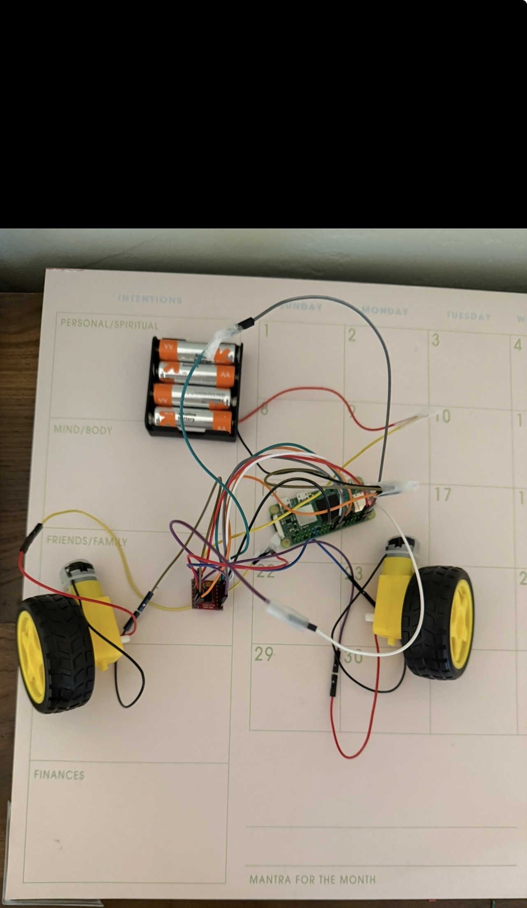
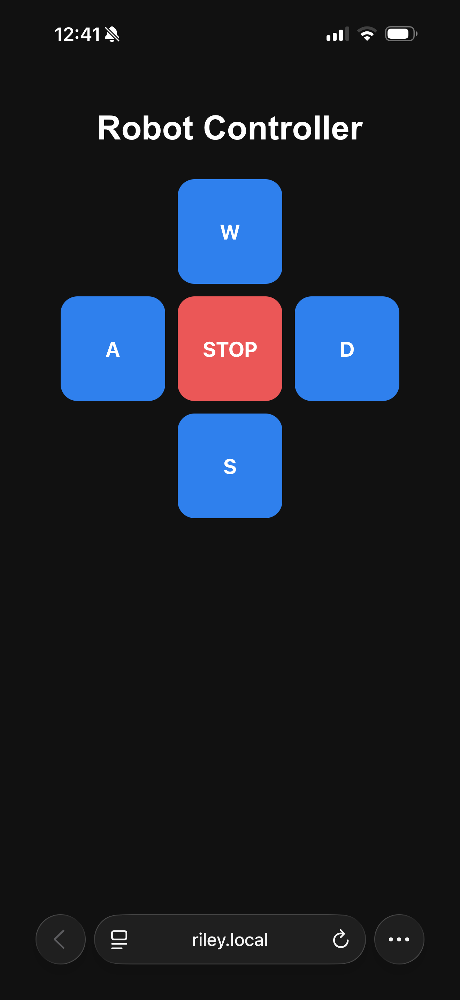
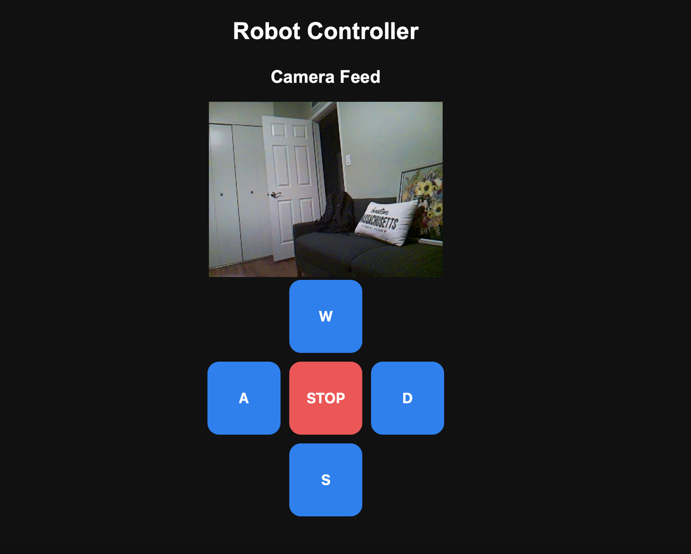

Unmanned ground vehicle built around embedded systems and real-world integration.
This project combines Raspberry Pi hardware, C++ software, GPIO motor control, Linux services, browser-based operation, CAD design, and TCP/IP networking into a functional unmanned ground vehicle platform.
Target User & Mission Vision
Designed for military, law enforcement, and emergency response applications, this platform demonstrates remote inspection, scouting, and control capabilities.
The focus of the project is not just movement, but the integration of embedded hardware, communication systems, networking, and software into a complete operational platform.
System Architecture
The robot operates using a client-server model where browser commands are transmitted over TCP/IP to a Raspberry Pi running Linux and C++ control logic. The Raspberry Pi processes incoming requests and maps them to GPIO outputs that drive the motors through the motor controller.
Browser UI
Networking
Linux + C++
Motor Signals
Movement
Prototyping & System Development
The UGV was developed through iterative hardware and software prototyping. Early development focused on validating electrical connections, motor behavior, power distribution, and communication between embedded components.
Hardware Bring-Up

Initial hardware integration included the Raspberry Pi, motor driver, external battery pack, DC gear motors, and prototype wiring used to validate movement and power stability.
Browser-Based Control GUI

A browser-based control interface was developed to send directional commands to the Raspberry Pi server over TCP/IP networking.
Live Control Interface & Camera Feed
The control interface was expanded to include a live camera feed alongside browser-based directional controls. This allowed the robot to be remotely operated while providing real-time visual feedback from the Raspberry Pi camera system.

This interface demonstrates integration between front-end UI design, TCP/IP communication, embedded Linux services, and real-time camera streaming. While the controller operates locally on the Raspberry Pi network, this screenshot documents the functional interface used during testing and system validation.
CAD Model & Mechanical Design
CAD models were developed to support component layout, structural planning, and future expansion of the system.


Future iterations will improve cable routing, structural rigidity, and payload integration.
Networking Demonstration
Wireshark was used to validate communication between the client browser and Raspberry Pi server over TCP/IP.

This capture shows the SYN packet initiating a TCP connection between the client and the Raspberry Pi server running on port 8080. The capture validates real network-layer communication between the operator interface and embedded system.
Code Architecture
The software stack combines modular C++ code, Linux services, GPIO control logic, and browser-based interfaces into a complete embedded systems platform.